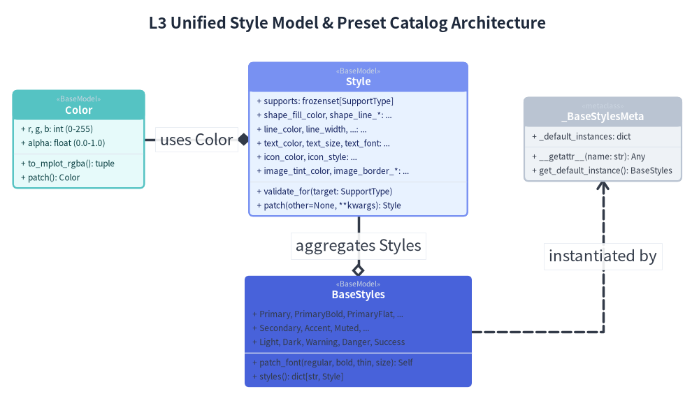
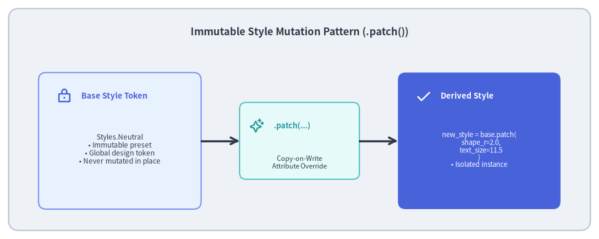

Type System, Guarded Models & Styles
A scalable illustration engine requires rock-solid type safety. In traditional plotting libraries, styles are passed as untyped dictionaries (e.g. {"color": "blue", "lw": 2}), where typos ("colour" or "width") fail silently or crash at runtime deep inside backend rendering code.
Drawlib eliminates this fragility through a strongly-typed, composite style architecture (_core/l2_types and _core/l3_styles), featuring immutable design tokens and guarded validation.

Source Code
from drawlib.canvas import save, setup
from drawlib.diagrams.class_diagram import ClassDiagram, ClassNode
from drawlib.styles import Styles
setup(width=160, height=94)
cd = ClassDiagram(
node_style=Styles.Neutral,
edge_style=Styles.DarkBold,
edge_text_style=Styles.Dark,
title="L3 Unified Style Model & Preset Catalog Architecture",
)
# Color Model
color_node = cd.add(ClassNode(name="Color", stereotype="BaseModel", width=30.0, style=Styles.SecondaryNeutral), xy=(18.0, 62.0))
color_node.add_attribute("r, g, b: int (0-255)")
color_node.add_attribute("alpha: float (0.0-1.0)")
color_node.add_method("to_mplot_rgba", return_type="tuple")
color_node.add_method("patch", return_type="Color")
# Unified Style Model
style_node = cd.add(ClassNode(name="Style", stereotype="BaseModel", width=50.0, style=Styles.PrimaryNeutral), xy=(82.0, 62.0))
style_node.add_attribute("supports: frozenset[SupportType]")
style_node.add_attribute("shape_fill_color, shape_line_*: ...")
style_node.add_attribute("line_color, line_width, ...: ...")
style_node.add_attribute("text_color, text_size, text_font: ...")
style_node.add_attribute("icon_color, icon_style: ...")
style_node.add_attribute("image_tint_color, image_border_*: ...")
style_node.add_method("validate_for", params="target: SupportType")
style_node.add_method("patch", params="other=None, **kwargs", return_type="Style")
# Metaclass
meta_node = cd.add(ClassNode(name="_BaseStylesMeta", stereotype="metaclass", width=36.0), xy=(138.0, 62.0))
meta_node.add_attribute("_default_instances: dict")
meta_node.add_method("__getattr__", params="name: str", return_type="Any")
meta_node.add_method("get_default_instance", return_type="BaseStyles")
# BaseStyles Catalog
catalog_node = cd.add(ClassNode(name="BaseStyles", stereotype="BaseModel", width=52.0, style=Styles.PrimaryFlat), xy=(82.0, 18.0))
catalog_node.add_attribute("Primary, PrimaryBold, PrimaryFlat, ...")
catalog_node.add_attribute("Secondary, Accent, Muted, ...")
catalog_node.add_attribute("Light, Dark, Warning, Danger, Success")
catalog_node.add_method("patch_font", params="regular, bold, thin, size", return_type="Self")
catalog_node.add_method("styles", return_type="dict[str, Style]")
# Relationships
cd.connect(style_node, color_node, "composition", start_side="left", end_side="right", label="uses Color")
cd.connect(catalog_node, style_node, "aggregation", start_side="top", end_side="bottom", label="aggregates Styles")
cd.connect(catalog_node, meta_node, "dependency", start_side="right", end_side="bottom", label="instantiated by")
cd.draw(xy=(0.0, 0.0))
save()
1. Concept: Value Objects & Immutable Style Tokens
Styles in Drawlib are not loose configurations; they are immutable Value Objects.
1.1. Single Universal Model with Target Declarations
Rather than fracturing styling into disparate, fragmented classes, Drawlib unifies all visual styling into a single, flat Pydantic model: Style(BaseModel).
- 28 First-Class Properties: Encompassing shape fills/lines, line widths/arrows, typography/fonts, icon styling, image tinting, and coordinate alignment offsets.
- Explicit Target Tracking (
supports): Each style declares which target primitives it supports (supports: frozenset[SupportType]whereSupportType = Literal["shape", "line", "text", "icon", "image"]). - Auto-Inference & Invariant Validation: If not declared explicitly,
_infer_supports()dynamically analyzes populated attributes. Furthermore,_validate_invariants()ensures mandatory attributes (e.g.shape_fill_colorfor shapes) are never missing when a target is claimed. - Runtime Target Guarding: Before drawing, primitives call
style.validate_for("shape"), raising a clear validation error if a style is applied to an incompatible graphic element.
1.2. The .patch() Functional Mutation Pattern
To customize an existing style without side effects, Drawlib uses a Copy-on-Write .patch() method:
.patch(other=None, **kwargs)clones the underlying model, applies overrides with full Pydantic validation, and returns a new frozenStyleinstance.- The original design token remains 100% pristine.

Source Code
from drawlib.canvas import save, setup
from drawlib.icons import phosphor
from drawlib.lines import line
from drawlib.shapes import rectangle
from drawlib.styles import Styles
from drawlib.text import text
setup(width=140, height=56)
rectangle((70, 28), width=136, height=52, style=Styles.Neutral.patch(shape_r=2.5))
text(
(70, 48.5),
"Immutable Style Mutation Pattern (.patch())",
style=Styles.DarkBold.patch(text_size=12.2),
)
# 1. Base Token (Left)
rectangle((28, 23), width=38, height=32, style=Styles.PrimaryNeutral.patch(shape_r=1.8))
phosphor.lock((15, 33.5), width=3.6, style=Styles.PrimaryBold)
text((19, 33.5), "Base Style Token", style=Styles.PrimaryBold.patch(halign="left", text_size=9.5))
text(
(28, 21),
"Styles.Neutral\n• Immutable preset\n• Global design token\n• Never mutated in place",
style=Styles.Dark.patch(text_size=8.5),
)
# 2. Patch Transformation (Center)
rectangle((70, 23), width=28, height=18, style=Styles.SecondaryNeutral.patch(shape_r=1.5))
phosphor.sparkle((60, 26.5), width=3.4, style=Styles.SecondaryBold)
text((64, 26.5), ".patch(...)", style=Styles.SecondaryBold.patch(halign="left", text_size=9.2))
text((70, 18), "Copy-on-Write\nAttribute Override", style=Styles.Dark.patch(text_size=8.0))
line((47, 23), (56, 23), arrow_head="->", style=Styles.DarkBold)
line((84, 23), (93, 23), arrow_head="->", style=Styles.DarkBold)
# 3. Derived Style (Right)
rectangle((112, 23), width=38, height=32, style=Styles.PrimaryFlat.patch(shape_r=1.8))
phosphor.check((99, 33.5), width=3.6, style=Styles.WhiteBold)
text((103, 33.5), "Derived Style", style=Styles.WhiteBold.patch(halign="left", text_size=9.5))
text(
(112, 21),
"new_style = base.patch(\n shape_r=2.0,\n text_size=11.5\n)\n• Isolated instance",
style=Styles.White.patch(text_size=8.2),
)
save()
2. Positioning: Layer 2 Types & Layer 3 Style Services
The type and styling system bridges low-level geometry and high-level domain components:
_core/l2_types:Coordinate = tuple[float, float]andCoordinates = list[Coordinate]: Lightweight functional coordinate representations without class overhead.Bezier2andBezier3: Control-point tuples for quadratic and cubic curves.- Pydantic bounds:
PosInt,PosFloat,Ratio($[0.0, 1.0]$), andAnglewith cyclic normalization modulo 360°.
_core/l3_colors:Color(BaseModel): Immutable RGBA model supporting hex codes (#3b82f6), RGB tuples, and RGBA floats..to_mplot_rgba(): Generates Matplotlib-ready normalized float tuples rounded to 5 decimal places.ColorUtil: Linear color interpolation and WCAG contrast ratio calculations.
_core/l3_styles:Style: The flat universal style value object.BaseStyles: Preset catalog providing 17 visual variations for 4 semantic roles (Primary,Secondary,Accent,Muted) plus extended roles (Light,Dark,Warning,Danger,Success).
3. Details: Metaclass Catalog & Pydantic Validation Mechanics
3.1. Metaclass Singleton Resolution (_BaseStylesMeta)
To provide the ergonomic syntax Styles.Primary or Styles["Neutral"] without requiring manual instantiation, BaseStyles uses a custom metaclass _BaseStylesMeta:
class _BaseStylesMeta(type(BaseModel)):
_default_instances: dict[type, BaseStyles] = {}
def __getattr__(cls, name: str) -> Any:
return getattr(cls.get_default_instance(), name)
def __getitem__(cls, name: str) -> Style:
return cls.get_default_instance()[name]
When a user imports from drawlib.styles import Styles and accesses Styles.PrimaryNeutral, the metaclass intercepts the attribute lookup on the class itself and resolves it against a registered default singleton instance.
3.2. Cascading Font Updates via .patch_font()
Documentation projects frequently need to customize typography across all presets (e.g. switching to Japanese fonts or adjusting default font sizes).
Instead of requiring users to patch every preset individually, BaseStyles.patch_font() updates the entire catalog in a single call:
styles = Styles.patch_font(
regular=FontJapanese.NOTO_SANS_CJK_JP_REGULAR,
bold=FontJapanese.NOTO_SANS_CJK_JP_BOLD,
size=11.0,
)
Internally, .patch_font() iterates through all Style attributes in BaseStyles, intelligently mapping bold and thin variants to corresponding styles, and returns a new cloned catalog with zero global mutation.
3.3. Declarative Model Validation
Every style attribute is validated using declarative Pydantic field constraints and BeforeValidator functions:
def _normalize_angle(v: float) -> float:
return float(v) % 360.0
Angle = Annotated[float, BeforeValidator(_normalize_angle)]
Bend = Annotated[float, Field(gt=-2.0, lt=2.0)]
PosFloat = Annotated[float, Field(ge=0.0)]
Invalid configurations (such as negative line widths, out-of-range transparencies, or invalid alignments) are trapped at API boundaries before any Matplotlib rendering code is executed.
Next, inspect the cryptographic caching engine in Cache & AST Engine.